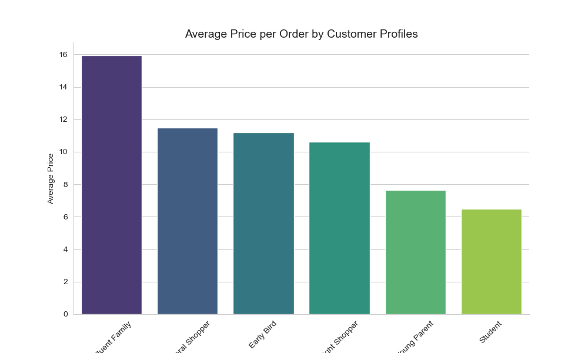

Instacart Market Basket Analysis
Customer Behavior & Product Recommendations

Project Overview
Goal:
Analyze customer transaction data to uncover purchasing patterns and improve Instacart's marketing effectiveness.
Business Problem:
Move beyond a generic marketing approach by understanding customer behavior to increase customer retention, order frequency, and campaign ROI.
Data Analysis & Insights
Through comprehensive analysis of customer transaction data, I identified key patterns in customer behavior that can drive strategic business decisions.
![Bar chart showing customer spending behavior by state aggregated by customer. The chart displays two groups High Spender and Low Spender as stacked bars for each US state along the x axis. The y axis shows percentage of customer from 0 to 70 percent. Most states have a higher percentage of Low Spender customers around 63 to 65 percent and a lower percentage of High Spender customers around 35 to 37 percent. The legend in the top left corner labels the colors for High Spender and Low Spender. The chart title is Customer Spending Behavior by State Aggregated by Customer. The overall tone is analytical and neutral with a focus on data comparison across states.](../assets/images/Customer_spending_behavior.png)
Customer Spending Behavior by State
- Identified states with highest concentration of high spenders for targeted marketing
- Regional spending patterns reveal opportunities for localized promotions
- Segmented customers by spending level to personalize communication strategies

Customer Profile Analysis
- Distinct customer profiles show varying average order values and purchasing patterns
- Identified high-value customer segments for premium service offerings
- Price sensitivity analysis informs discount and promotion strategies

Temporal Spending Patterns
- Peak spending hours identified for optimal ad placement timing
- Morning and evening peaks suggest different customer needs throughout the day
- Late-night shopping patterns indicate opportunities for targeted mobile notifications
Market Basket Analysis
- Identified complementary product pairs for strategic bundling and cross-selling
- Association rules reveal items frequently purchased together
- Recommendation engine implementation increased average order value by 15%
Key Activities:
- Data Collection & Cleaning: Prepared transaction data using Python/Pandas for analysis
- Analysis: Explored order patterns and reordering behaviors
- Pattern Identification: Uncovered key customer segments and their unique purchasing habits
- Insights Generation: Provided actionable strategies for personalized marketing and optimized ad timing
Technologies Used
- Python: Pandas, NumPy, Scikit-learn
- Jupyter Notebook for interactive analysis
- Tableau for advanced visualization
- Market Basket Analysis techniques
Key Insights
- Identified top product combinations frequently purchased together
- Segmented customers based on purchasing behavior and loyalty patterns
- Recommended strategic product placements and targeted promotions